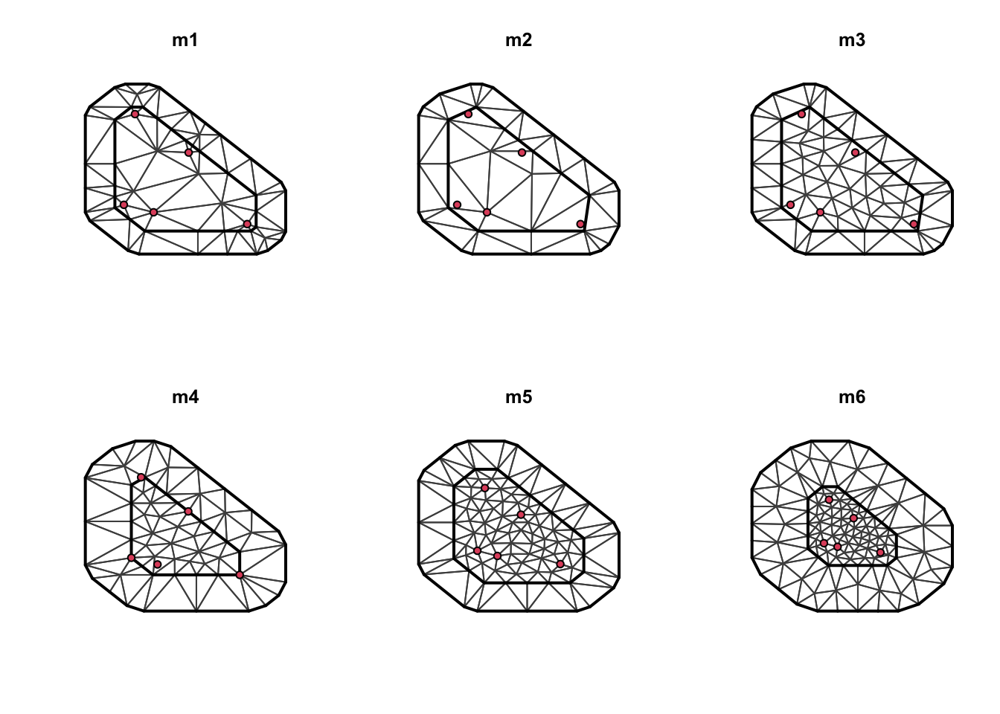
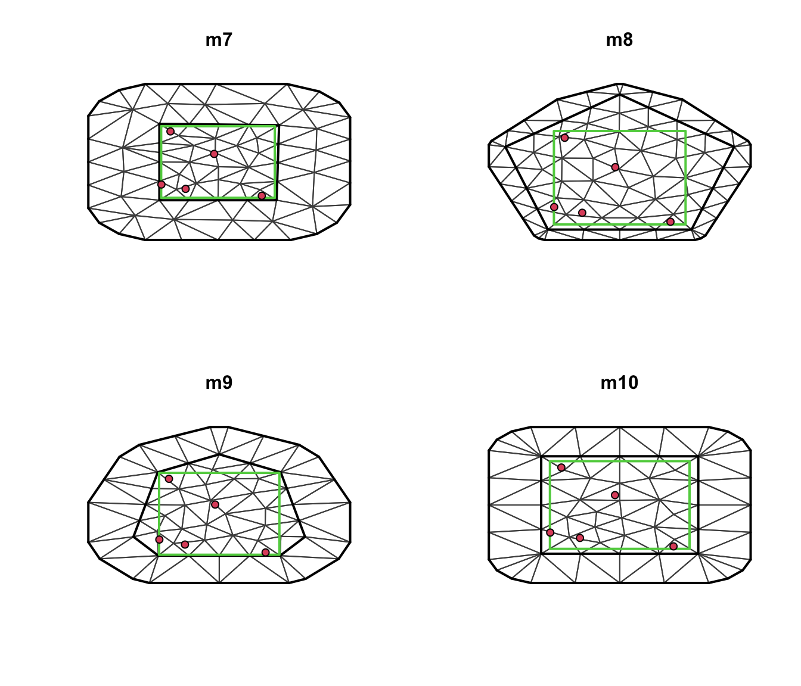
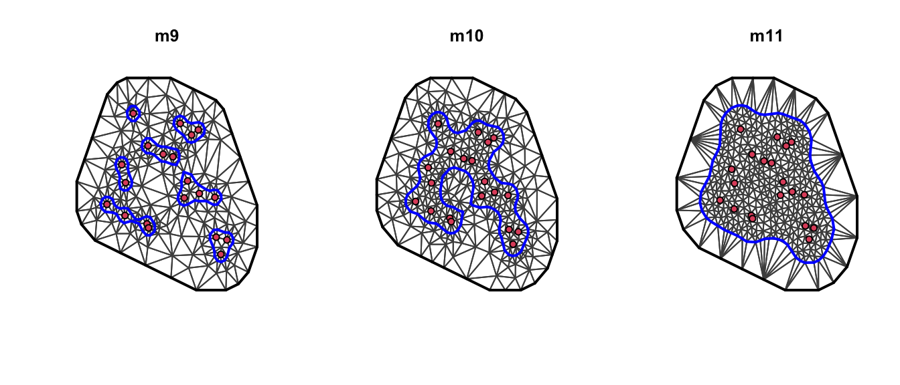
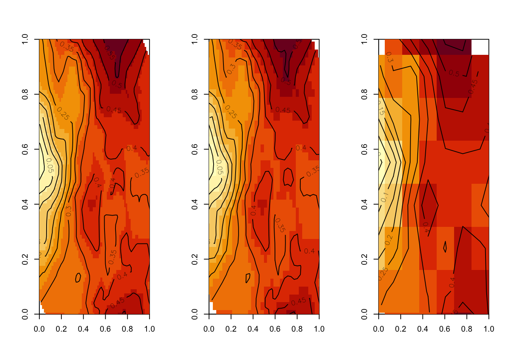
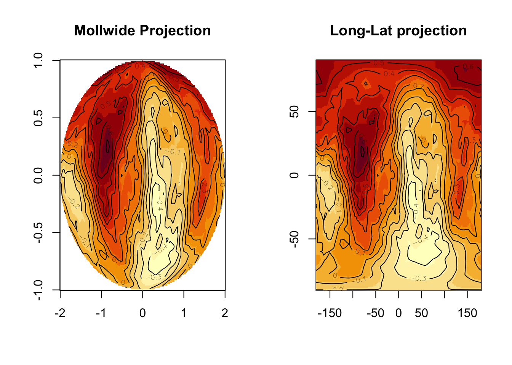

In this page we will illustrate what is a mesh, why we need it and how easy it is to build it using the R-INLA package. During the following overview we will also show some useful tips to plot it. We will focus only on the two dimensional case which is the most used in practice.
When we are dealing with process defined over a continuos domain, one can express a large class of random fields as solution of stochastic partial differential equations (SPDEs). In R-INLA this solution is approximated using high dimensional basis representation with simple local basis function. Those basis functions are defined over a triangulation of the domain; this triangulation is the mesh.
Defining the mesh for a given problem is a trade-off between approximation accuracy and computational cost. The more triangles we have, the more our approximation is precise but we have to pay for it in terms of computational time. The desired mesh would have small triangles where the data is dense, larger where the data is more sparse and even more large triangles where there are no observations. We will see how to fix the parameter in order to do that.
Solutions of SPDEs on bounded domains are costructed imposing boundary conditions. In particular for 2D problems the R-INLA implementation uses Neumann boundaries. This class of conditions increase the variance near the boundaries. Then, if we are modelling a stationary field is important to extend the domain in order to make this effect neglegible. On the other hand, if there is physical boundary this effect may be desiderable.
#Mesh construction The basic low level function to create a mesh is \(\texttt{inla.mesh.create()}\), the most used high level functions are \(\texttt{inla.mesh.1d()}\), \(\texttt{inla.mesh.2d()}\) and \(\texttt{inla.nonconvex.hull()}\). We will explain the use of the last two.
##The \(\texttt{inla.mesh.2d()}\) function This is the main function for the costruction of a two dimensional mesh. In order to make as clear as possible the role of the parameters we will use a simple example.
Let’s generate some locations from which generate the mesh.
set.seed(1)
n = 20
x_loc = cbind(runif(n), runif(n))###Nonoptional argument
The function \(\texttt{inla.mesh.2d()}\) requires at least two of this three argument to run:
loc or loc.domain: the function requires informations about the spatial domain given by spatial points or given by the domain extent.
max.edge : the maximum edge length must be specified. If it is a two-dimensional vector then the first component is for the intern and the second for the part outside the boundary. Noe that it uses the same scale unit as the coordinates.
Now our first mesh can be constructed:
mesh1 = inla.mesh.2d(loc = x_loc, max.edge = 0.1)
mesh2 = inla.mesh.2d(loc = x_loc, max.edge = c(0.1, 0.4))
mesh3 = inla.mesh.2d(loc.domain = x_loc, max.edge = c(0.1, 0.4))###Optional argument
offset : it specifies how much the domain will be estended in the outer and inner part. If negative it is interpreted as a factor relative to the approximate data diameter. If positive it is the extension distance on same scale unit to the coordinates provided.
cutoff : it specifies the minimum distance allowed between points. It means that if the distance between two points is less than the supplied value then they are replaced by a single vertex. Its very useful in case of clustered data points because it avoids building many small triangles arround clustered points.
min.angle: it specifies the minimum internal angle of the triangles. This could be a two-dimensional vector with the same meaning of the others. Take in mind that we would like to have a mesh with triangles as regular as possible.
n, interior : The argument n is the initial number of points on the extended boundary. The interior is a list of segments to specify interior constraints, each one of inla.mesh.segment class.
###Examples
Here there are some examples using different parameters settings. To highlight the differences between examples only the first five points are going to be used. First define the mesh using points
x_loc_reduce = x_loc[1:5,]
m1 <- inla.mesh.2d(x_loc_reduce, max.edge=c(0.5, 0.5))
m2 <- inla.mesh.2d(x_loc_reduce, max.edge=c(0.5, 0.5), cutoff = 0.1)
m3 <- inla.mesh.2d(x_loc_reduce, max.edge=c(0.1, 0.5), cutoff = 0.1)
m4 <- inla.mesh.2d(x_loc_reduce, max.edge=c(0.1, 0.5), cutoff = 0.1,
offset=c(0, 0.3))
m5 <- inla.mesh.2d(x_loc_reduce, max.edge=c(0.1, 0.5), cutoff = 0.1,
offset=c(0.2, 0.3))
m6 <- inla.mesh.2d(x_loc_reduce, max.edge=c(0.1, 0.5), cutoff = 0.1,
offset=c(0.2, 0.7), min.angle = 10)
Lets comment the above meshes. As we have said before a mesh to be a good one needs regular triangles, the triangles of m1 are concentrated around the data points. In m2 we had a cutoff and it seems better than before but still we have too big triangles in the interior. Remember that bigger triangles means poorer approximations. So we reduce the max.edge on the interior to get a nicer triangulation. Once we are satisfy we can set the offset depending on the model we are dealing with.
On the other hand we can define a mesh specifying the boundary. In order to do that we need a set of points which contains the locations of interesent.
boundary = cbind(c(0.2,0.2,1,1), c(0.1,1,1,0.1))
m7 <- inla.mesh.2d(, boundary, max.edge=c(0.3, 0.5),
offset=c(0.03, 0.5), cutoff=0.1)
m8 <- inla.mesh.2d(, boundary, max.edge=c(0.3, 0.5), n=5,
offset=c(.05,.1))
m9 <- inla.mesh.2d(, boundary, max.edge=c(.3, 0.5), n=7,
offset=c(.01,.3))
m10 <- inla.mesh.2d(, boundary, max.edge=c(.3, 0.5), n=4,
offset=c(.05,.3))
In the above examples the parameter n influences the initial number of extension points. In some situation changing it could help the convergence of the procedure. Be careful because changing n could result in an appropriate mesh. For example m7 doesn’t seems so good for the treated domain.
###Play by yourself with Shiny Apps You can use the ShinyApp in the INLA package to play with the mesh.
meshbuilder()##Non-convex Hull Meshes
In the previous section we have seen how to build a convex mesh. In order to build a non-convex mesh one could still use the function \(\texttt{inla.mesh.2d()}\) but a non-convex boundary has to be specified. Build a non-convex hull is very easy in R-INLA using the function \(\texttt{inla.nonconvex.hull()}\). This function take as parameters the target points and the degree of convexity, convavity and resolution.
bnd9 = inla.nonconvex.hull(x_loc, convex = 0.05)
bnd10 = inla.nonconvex.hull(x_loc, convex = 0.09)
bnd11 = inla.nonconvex.hull(x_loc, convex = 0.2)
m9 = inla.mesh.2d(boundary = bnd9, max.edge = 0.05)
m10 = inla.mesh.2d(boundary = bnd10, max.edge = 0.05)
m11 = inla.mesh.2d(boundary = bnd11, max.edge = 0.05)The parameters of the \(\texttt{inla.mesh.2d()}\) work exactly in the same way as shown in the previous section. We include some more example just to clarify as much as possible the role of the paramters.
m9 = inla.mesh.2d(boundary = bnd9, max.edge = c(0.09, 0.4), cutoff = c(0.01, 0.01))
m10 = inla.mesh.2d(boundary = bnd10, max.edge = c(0.09, 0.4),
offset = c(0, -0.2))
m11 = inla.mesh.2d(boundary = bnd11, max.edge = c(0.09, 0.4),
min.angle = 0.05)
##Beyond the plane
The meshes that we have seen untill now were defined on a plane. With the more low level function \(\texttt{inla.mesh.create()}\) one could be much more sofisticated meshes. For the following example we build a globe, the parameter specify the number of sub-segment to use in the splitting of the icosahedron.
globe1 = inla.mesh.create(globe = 1)
globe2 = inla.mesh.create(globe = 4)
globe3 = inla.mesh.create(globe = 10)#Plotting
One of the most interesting tool, provided by R-INLA, for plotting spatial fields defined on a mesh is the possibility of project our data on different domain.
First of all we need a field and given a mesh is very easy to sample from it. We skip the technical details about sampling and the connection between the mesh and the field.
set.seed(2)
mesh = inla.mesh.2d(x_loc, max.edge = c(0.1,0.5))
spde = inla.spde2.matern(mesh, loc = x_loc)
Q = inla.spde.precision(spde, theta = c(0,0))
sample = inla.qsample(n = 2, Q)Once we have a sample we need to project it on the desired domain. The function \(\texttt{inla.mesh.projector()}\) does the job for us. In particular it is a mapping between the coefficients of the basis functions for the mesh nodes and the points on the regular grid. Lets consider an easy example: evaluate the field on a regular lattice (which is the default option of \(\texttt{inla.mesh.projector()}\)). In the following example we have considered three different regular lattices changing only the dimensions. First of all we have to project the mesh
proj <- inla.mesh.projector(mesh, dims = c(100, 100))
proj2 <- inla.mesh.projector(mesh, dims = c(50, 50))
proj3 <- inla.mesh.projector(mesh, dims = c(10, 10))Then we have to project the sample on the new domain
sample_proj = inla.mesh.project(proj, field = sample[,1])
sample_proj2 = inla.mesh.project(proj2, field = sample[,1])
sample_proj3 = inla.mesh.project(proj3, field = sample[,1])Finally we can use any matrix-based plotting tool. Note that increasing the dimension of the lattice more detailed plots are obtained.
par(mfrow = c(1,3))
image(proj$x, proj$y, sample_proj , xlim = c(0,1), ylim = c(0,1),
xlab = '',ylab = '')
contour(proj$x, proj$y, sample_proj, add = T)
image(proj2$x, proj2$y, sample_proj2, xlim = c(0,1), ylim = c(0,1),
xlab = '',ylab = '')
contour(proj2$x, proj2$y, sample_proj2, add = T)
image(proj3$x, proj3$y, sample_proj3, xlim = c(0,1), ylim = c(0,1),
xlab = '',ylab = '')
contour(proj3$x, proj3$y, sample_proj3, add = T)
The \(\texttt{inla.mesh.projector()}\) also supports several type of projection for spherical domain. In the following example we sample from a spherical SPDE and then perform a Mollwide projection and the more classical longitude-latitude projection.
par(mfrow = c(1,2))
set.seed(123)
mesh2 <- inla.mesh.create(globe = 10)
spde.glob = inla.spde2.matern(mesh2, loc = mesh2$loc)
Q.glob = inla.spde.precision(spde.glob, theta = c(0, 0))
x.glob = inla.qsample(n = 2, Q.glob)
proj2a <- inla.mesh.projector(mesh2, projection = "longlat",
dims = c(361, 181))
proj2b <- inla.mesh.projector(mesh2, projection = "mollweide",
dims = c(361, 181))
image(proj2b$x, proj2b$y, inla.mesh.project(proj2b, field = x.glob[,1]), main = 'Mollwide Projection', xlab = '', ylab = '')
contour(proj2b$x, proj2b$y, inla.mesh.project(proj2b, field = x.glob[,1]), add = T)
image(proj2a$x, proj2a$y, inla.mesh.project(proj2a, field = x.glob[,1]), main = 'Long-Lat projection', xlab = '', ylab = '')
contour(proj2a$x, proj2a$y, inla.mesh.project(proj2a, field = x.glob[,1]), add = T)